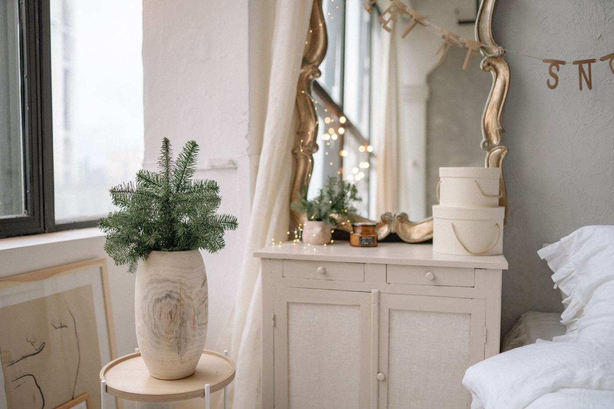

Buyurtma holati
Qabul qilindiBugun, 10:42
To'landi · PaymeBugun, 10:43
Yig'ilmoqdaOmborda tayyorlanmoqda
Yo'ldakuryer ma'lumotlari shu yerda chiqadi
YetkazildiBugun, 22:42 gacha (12 soat ichida)
Yetkazish manziliToshkent, Mirzo Ulug'bek tumani[ko'cha, uy, xonadon]tezkor, 12 soat ichida
Qabul qiluvchiDilnoza+998 90 123 45 67

Chalk White mebel bo'yog'i1 L · Oq · 1 dona329 000 so'm Mato bo'yog'i spreyi400 ml · Zaytun · 2 dona498 000 so'm
Mato bo'yog'i spreyi400 ml · Zaytun · 2 dona498 000 so'mOval 40 cho'tka40 mm · 1 dona119 000 so'm
Kuryer kelguncha tayyorlaning
Yuzani qanday tayyorlash va birinchi qatlamni qanday surtish haqida qisqa videolar.
Qo'llanmani ochish